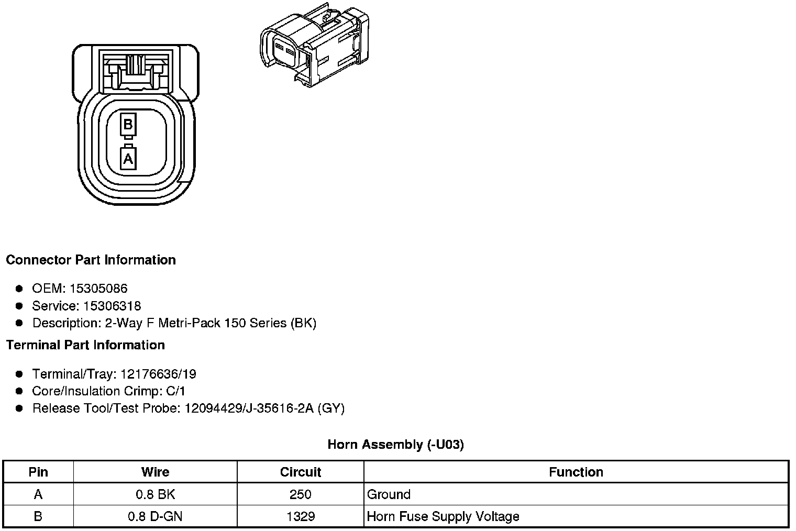
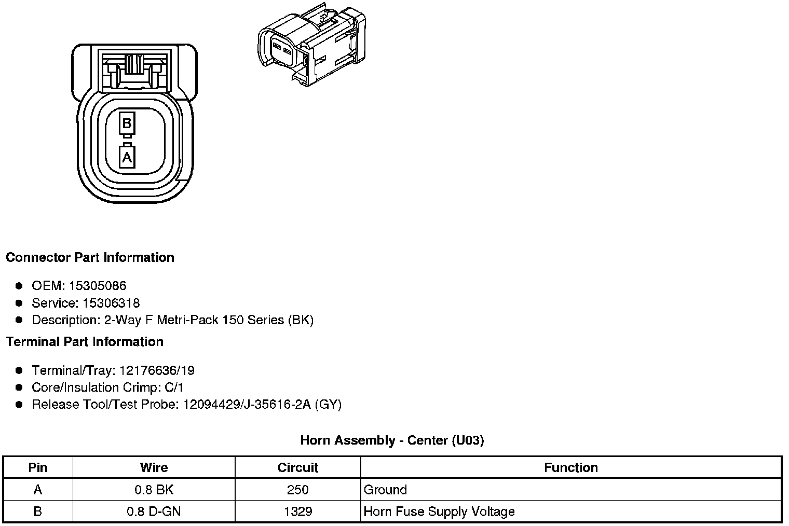

Operation CHARM
: Car repair manuals for everyone.
Home
>>
Cadillac
>>
2008
>>
SRX AWD V8-4.6L
>>
Repair and Diagnosis
>>
Lighting and Horns
>>
Horn
>>
Diagrams
>>
Connector Views
Connector Views
Component Connector End Views
Horn Assembly (-U03)

Horn Assembly - Center (U03)

Horn Assembly - Left (U03)